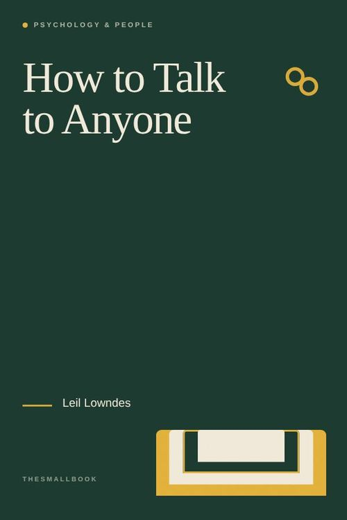

Library › Ask the Library › How can I improve my English?
How can I improve my English?
The short answer
English improves with input and reps, not rules. Read something you enjoy daily, listen to content with subtitles, and speak out loud, even to yourself. Recording yourself weekly shows progress nobody else can see. Consistency beats intensity: 15 minutes daily beats 3 hours on Sunday.
The books behind the answer

Talk Like TED
Carmine Gallo · 2014 · 8 min · 6 lessons
Ideas are the currency of the 21st century - and the speakers who move the world master passion, story, and the 18-minute brain.
- Speak in Stories: Stories are how humans remember, structure your speech like a narrative.
Show Your Work!
Austin Kleon · 2014 · 8 min · 6 lessons
You don't have to be a genius - join a scenius. Share something small every day, and let the work find its audience.
- Share Your Process: Write daily, even badly, the volume builds the voice.

How to Talk to Anyone
Leil Lowndes · 2003 · 8 min · 6 lessons
People decide who you are in seconds - and every second is coachable: the smile, the eyes, the posture, the first words.
- The Vocabulary of Confidence: Simple, concrete words said slowly beat fancy words said nervously.
Questions people ask next
Can I read this in Hindi?
Yes. This answer is written in simple English. Open any linked book and choose Hindi or Hinglish to read the full lessons in your language, with audio where available.